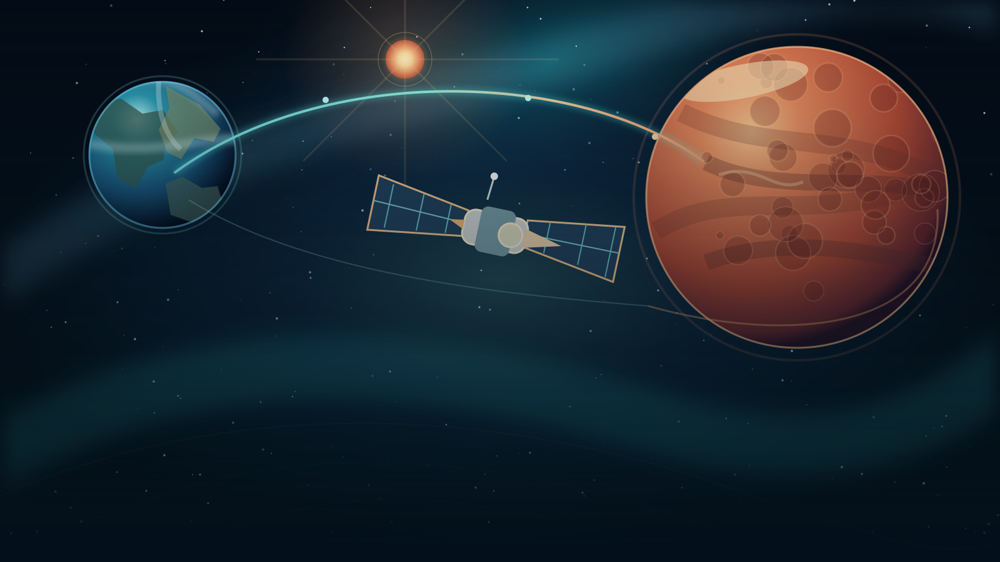

ROZDZIAŁ 11 · NIE WYSTARCZY ZNAĆ CELU
Nie ma jednej drogi na Marsa.
Jeden start, tysiące możliwych przylotów. Każda data rysuje inną drogę przez przestrzeń, a każda droga ma swoją cenę. Najważniejszym narzędziem nawigatora bywa więc nie silnik, lecz kalendarz.
W CENTRUM KONTROLI LOTÓW
Na ekranie jest Mars. Ale gdzie jest droga?
Wyobraź sobie pokój pełen monitorów. Na jednym widać Słońce, Ziemię i Marsa. Na drugim — nie fotografię, nie mapę gwiazd, lecz plamę o nieregularnym kształcie. Przez jej środek biegną zamknięte linie, podobne do poziomic na mapie górskiej.
Gdybyś nie wiedział, na co patrzysz, mógłbyś uznać ją za dziwne zdjęcie z mikroskopu. Dla projektanta misji to jedna z najważniejszych map: pokazuje, które daty pozwalają polecieć na Marsa względnie łatwo, a które wymagają znacznie większej energii.
W poprzednim etapie odkryliśmy, dlaczego nie celuje się tam, gdzie planeta znajduje się dziś. Teraz idziemy dalej. Zobaczymy, że nawet gdy znamy przyszłe położenie Marsa, nie istnieje tylko jeden możliwy lot. Można wystartować wcześniej, później, podróżować krócej albo dłużej. Za każdą z tych decyzji stoi inna trajektoria.
TAJEMNICZA NAZWA, PRECYZYJNY SENS
Dlaczego nawigatorzy patrzą na „porkchop plot”?
Angielska nazwa „porkchop plot” brzmi niemal żartobliwie. Wzięła się od kształtu obszarów otoczonych liniami jednakowej energii — bywa, że przypominają kotlet. Pod zabawnym określeniem kryje się poważne narzędzie projektowania misji.
Na jednej osi umieszcza się datę startu, na drugiej datę przybycia albo czas lotu. Następnie oblicza trajektorię dla każdej pary terminów. Kolor mówi, ile energii wymaga wybrany wariant, a poziomice łączą punkty o podobnym koszcie energetycznym. W ten sposób z ogromnej liczby możliwych podróży wyłania się dolina dogodnych rozwiązań.
Mapy tej używa się nie tylko przy Marsie. Podobne diagramy pomagają badać loty do planetoid, komet i innych planet. Sama mapa nie wybiera jednak celu misji ani nie uwzględnia automatycznie wszystkich ograniczeń konstrukcyjnych.
EKSPERYMENT / MODEL DWUCIAŁOWY
Znajdź dolinę energii.
Wybierz względny dzień startu i czas przelotu. Kolory przedstawiają obliczone C3 w uproszczonym, heliocentrycznym modelu transferu Ziemia–Mars, opartym na zagadnieniu Lamberta.
Wyświetlane C3 to v∞² względem Ziemi — nie paliwo ani całkowite Δv rakiety. Start referencyjny jest umowny: wykres nie podaje terminów misji NASA. Pomijamy mimośrody, nachylenia orbit, inne planety i rzeczywistą geometrię odlotu z Ziemi.
LICZBA, KTÓRA DECYDUJE O ŁADUNKU
Nie chodzi o wielką prędkość. Chodzi o właściwą.
Rakieta nie tylko podnosi statek ponad atmosferę. Musi nadać mu taki ruch, aby po opuszczeniu otoczenia Ziemi sonda znalazła się na odpowiedniej orbicie wokół Słońca. W obliczeniach misji pojawia się wtedy parametr C3 — kwadrat prędkości nadmiarowej v∞ względem Ziemi.
Jeżeli C3 wynosi 9 km²/s², prędkość nadmiarowa wynosi 3 km/s. Nie jest to całkowita prędkość sondy ani przyrost prędkości, który silnik musi wykonać od powierzchni Ziemi. Start rakiety obejmuje dodatkowo pokonanie grawitacji, straty, budowę orbity parkingowej oraz manewr odlotowy.
Dlaczego więc nawigatorzy tak uważnie śledzą C3? Ponieważ jego wzrost zwykle zmniejsza masę ładunku, którą rakieta może skierować na daną trajektorię. To parametr, który łączy elegancką geometrię orbit z bardzo praktycznym pytaniem: ile aparatury naukowej dotrze do celu?
v∞ = 3 km/s
→ C3 = 9km²/s² · modelowy przykład, nie parametry konkretnej misjiTRZY RÓŻNE PYTANIA
Szybciej, taniej, bezpieczniej. Wybierz dwa?
Najmniej energochłonny transfer nie musi być najszybszy. Aby skrócić podróż, często trzeba nadać sondzie większą prędkość początkową; czasem podnosi to również prędkość zbliżania do Marsa. Przy locie orbitalnym oznacza to trudniejsze hamowanie, a przy wejściu w atmosferę — inne obciążenia termiczne i aerodynamiczne.
Z drugiej strony dłuższa podróż nie jest automatycznie lepsza. Statek musi przez wiele miesięcy utrzymywać łączność, orientację, zasilanie i sprawność urządzeń. Dla wypraw załogowych dochodzą ekspozycja na promieniowanie, zaopatrzenie oraz zdrowie załogi.
Dlatego realny projekt misji przypomina sztukę kompromisu. Nie szuka się po prostu najniższej liczby na mapie. Poszukuje się rozwiązania, które mieści się w możliwościach rakiety, warunkach przybycia i celach naukowych całej ekspedycji.
Wyższa wymagana energia odlotowa może oznaczać mniejszy dopuszczalny ładunek.
Krótszy przelot zmienia geometrię i często zwiększa wymagania energetyczne.
Prędkość przy Marsie wpływa na orbitę, hamowanie lub wejście w atmosferę.
DWA PUNKTY. JEDEN CZAS. PEWNA ORBITA.
Jak obliczyć drogę, która jeszcze nie istnieje?
W XVIII wieku Johann Heinrich Lambert opisał właściwości ruchu orbitalnego, które pozwalają dziś rozwiązać jedno z podstawowych zadań nawigacji kosmicznej: znamy pozycję startową, przyszłą pozycję docelową oraz czas między nimi. Jakiej prędkości początkowej potrzeba, by połączyć te punkty orbitą?
To zagadnienie Lamberta. W modelu dwóch ciał można wyznaczyć prędkości na obu końcach toru. Porównując je z prędkościami Ziemi i Marsa, obliczamy prędkości nadmiarowe, a stąd C3 i prędkość przybycia. Powtarzając obliczenie dla wielu par dat, otrzymujemy mapę widoczną wyżej.
Prawdziwe programy nawigacyjne idą dalej: korzystają z precyzyjnych efemeryd, korekt, modeli wielu ciał i ograniczeń konkretnego statku. Nasze doświadczenie stosuje wersję uproszczoną — planety poruszają się po kołowych, współpłaszczyznowych orbitach. To dobry sposób na odkrycie sensu mapy, a nie zastępstwo oprogramowania kontroli lotów.
ZIEMIA, 2011 → MARS, 2012
Curiosity. Dwie daty, które musiały się spotkać.
26 listopada 2011 roku z Florydy wystartowała rakieta Atlas V ze statkiem Mars Science Laboratory. Na pokładzie znajdował się łazik Curiosity. Przez kolejne miesiące pojazd podróżował po zaplanowanej trajektorii międzyplanetarnej, zmierzając do miejsca, w którym Mars miał się znaleźć podczas spotkania.
6 sierpnia 2012 roku czasu UTC Curiosity wylądował w kraterze Gale. W Kalifornii był jeszcze wieczór 5 sierpnia — różnica dat wynika ze stref czasowych. W samym finale misji pojazd musiał precyzyjnie wejść w atmosferę, wytracić prędkość i skorzystać z niezwykłego systemu opuszczenia łazika na linach.
Nie był to prosty „lot po linii” ani dokładne powtórzenie idealnej orbity Hohmanna. Był starannie dobranym wariantem pośród wielu możliwych rozwiązań: z uwzględnieniem startu, rejsu, korekt i warunków przybycia.
START / CAPE CANAVERAL
LĄDOWANIE / KRATER GALE · UTC
07 / TWOJE CENTRUM OBLICZEŃ
Laboratorium Trajektorii.
Właściwe laboratorium Atlasu pozwala analizować terminy startu, czas transferu i energię lotu. Przejdź od naszej mapy dydaktycznej do rozbudowanego symulatora zachowanego z wcześniejszych etapów.
Otwórz przestrzeń możliwych podróży.
Symulator ładuje się po naciśnięciu przycisku, żeby artykuł działał płynnie również na urządzeniach mobilnych i starszych przeglądarkach.
Eksperyment działa bezpośrednio w tej podstronie.
RZETELNOŚĆ JEST CZĘŚCIĄ ODKRYWANIA
Co pokazuje nasza mapa, a czego nie?
Interaktywny wykres wykorzystuje stały promień kołowej orbity Ziemi (1 AU) i Marsa (około 1,524 AU), centralne pole grawitacyjne Słońca oraz jednoprzebiegowe, progradacyjne rozwiązanie zagadnienia Lamberta w dwóch wymiarach. Punkt odniesienia dobrano tak, aby modelowy transfer Hohmanna trwał około 259 dni. Poziome przesunięcie oznacza dni względem tego umownego punktu, a nie datę z kalendarza. C3 i prędkość przybycia są obliczane dla wybranego wariantu w tym modelu, nie dla konkretnej misji NASA. Nie liczymy startu z powierzchni, przechwycenia na orbicie Marsa ani wejścia atmosferycznego. W okolicach geometrycznie osobliwych stosujemy numeryczne przybliżenie.